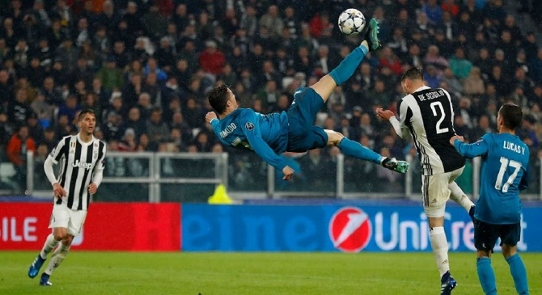
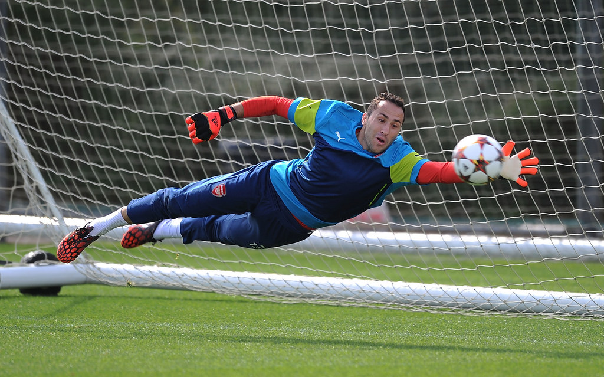

Association football
Association football, more commonly known as simply football or soccer (a shortening of the word "association"), is a team sport played with a spherical ball between two teams of 11 players. It is played by approximately 250 million players in over 200 countries and dependencies, making it the world's most popular sport. The game is played on a rectangular field called a pitch with a goal at each end. The object of the game is to outscore the opposition by moving the ball beyond the goal line into the opposing goal. The team with the higher number of goals wins the game.
Football is played in accordance with a set of rules known as the Laws of the Game. The ball is 68–70 cm (27–28 in) in circumference and known as the football. The two teams each compete to get the ball into the other team's goal (between the posts and under the bar), thereby scoring a goal. Players are not allowed to touch the ball with hands or arms while it is in play, except for the goalkeepers within the penalty area. Other players mainly use their feet to strike or pass the ball, but may also use any other part of their body except the hands and the arms. The team that has scored more goals at the end of the game is the winner; if both teams have scored an equal number of goals either a draw is declared or the game goes into extra time or a penalty shootout depending on the format of the competition. Each team is led by a captain who has only one official responsibility as mandated by the Laws of the Game: to represent their team in the coin toss prior to kick-off or penalty kicks.
Football is governed internationally by the International Federation of Association Football (FIFA; French: Fédération Internationale de Football Association), which organises World Cups for both men and women every four years. The FIFA World Cup has taken place every four years since 1930 with the exception of 1942 and 1946 tournaments, which were cancelled due to World War II. Approximately 190–200 national teams compete in qualifying tournaments within the scope of continental confederations for a place in the finals. The finals tournament, which is held every four years, involves 32 national teams competing over a four-week period. It is the most prestigious football tournament in the world as well as the most widely viewed and followed sporting event in the world, exceeding the Olympic Games.
The most prestigious competition in club football is the UEFA Champions League which attracts an extensive television audience throughout the world. The final of the tournament has been, in recent years, the most-watched annual sporting event in the world.[6] The top five European leagues are the Premier League (England), La Liga (Spain), Bundesliga (Germany), Serie A (Italy), and Ligue 1 (France). Attracting most of the world's best players, each of the leagues has a total wage cost in excess of £600 million/€763 million/US$1.185 billion.
Football is one of a family of football codes, which emerged from various ball games played worldwide since antiquity. The modern game traces its origins to 1863 when the Laws of the Game were originally codified in England by The Football Association.
The rules of association football were codified in England by FA in 1863 and the name association football was coined to distinguish the game from the other forms of football played at the time, specifically rugby football. The first written "reference to the inflated ball used in the game" was in the mid-14th century: "Þe heued fro þe body went, Als it were a foteballe". The Online Etymology Dictionary states that the "rules of the game" were made in 1848, before the "split off in 1863". The term soccer comes from a slang or jocular abbreviation of the word "association", with the suffix "-er" appended to it. The word soccer (which arrived at its final form in 1895) was first recorded in 1889 in the earlier form of socca.
Within the English-speaking world, association football is now usually called "football" in the United Kingdom and mainly "soccer" in Canada and the United States. People in countries where other codes of football are prevalent (Australia, Ireland, Wales, South Africa and New Zealand) may use either term, although national associations in Australia and New Zealand now primarily use "football" for the formal name.